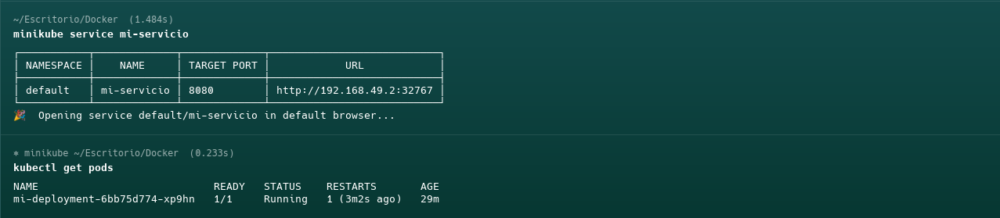
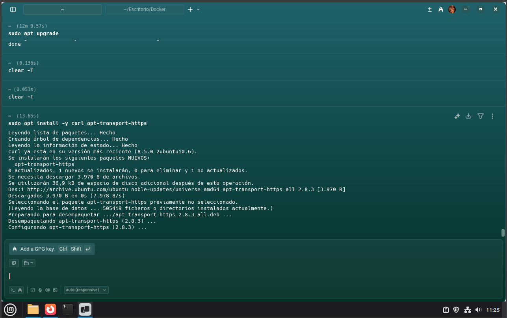
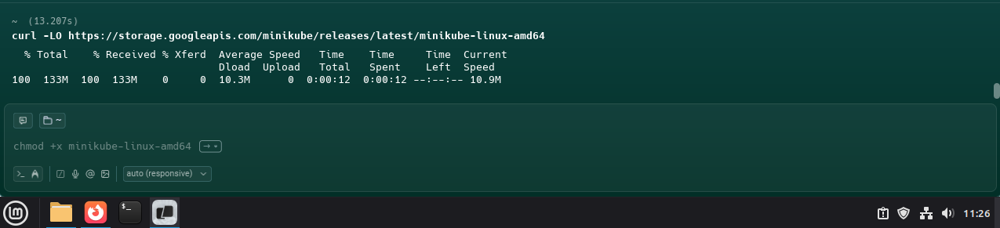
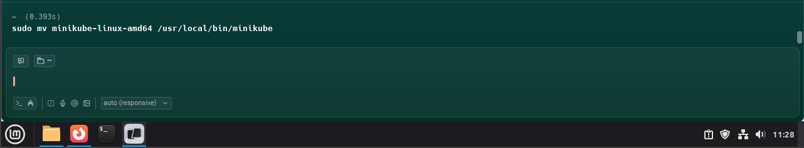
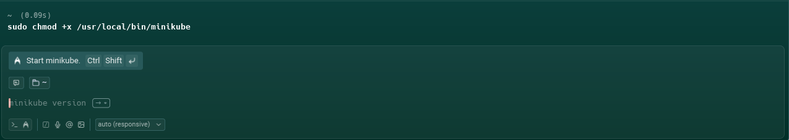
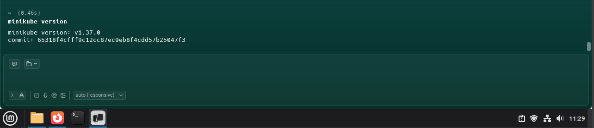
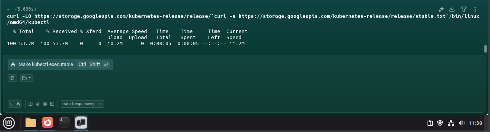
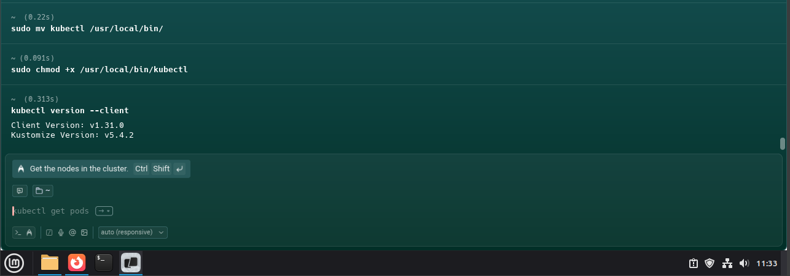
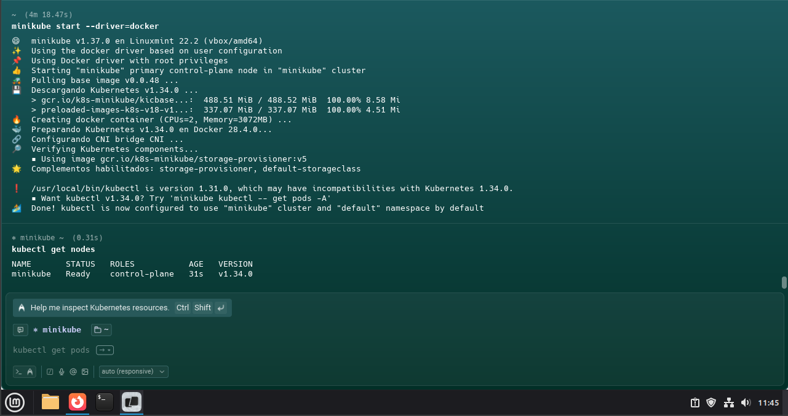
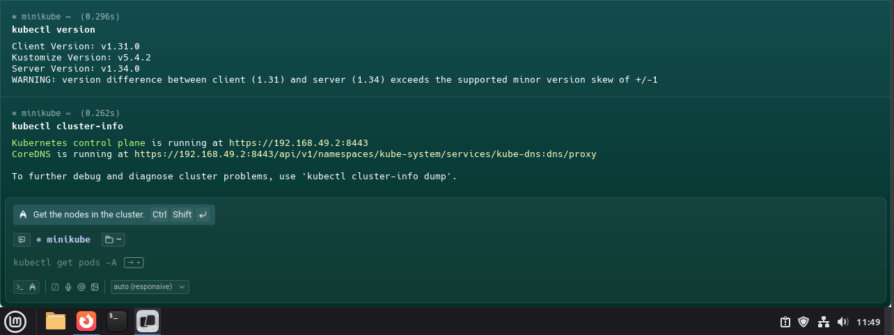

Este proyecto tiene como objetivo profundizar en la instalación y configuración de distribuciones Linux, así como en la creación y gestión de contenedores Docker y orquestación con Kubernetes.
Integrantes del Grupo: Juan Esteban Meñaca - Carlos Andres Caicedo - Santiago Aldana
Geany - InstalacionGeany - PersonalizacionGeany - Personalizacion 2Geany - EjemploSublime Text - InstalacionSublime Text - Personalizacion y ejemplo
Actividad 3: Scripts
Script de automatizacion tanto en entorno grafico como en entorno de consola, ademas se utiliza el uso de comandos para la gestion de procesos, y termina con un programa en Java utilizando concurrencia mediante hilos.
3.1 Automatizacion grafica
Captura 1Captura 2Captura 3
3.2 Automatizacion consola
Captura 4Captura 5
3.3 Gestion de procesos
Captura 6Captura 7Captura 8Captura 9
3.4 Programacion con hilos
Captura 10Captura 11Captura 12
Actividad 4: Docker Engine
Instalacion de Docker Engine, creando una imagen Docker para la creacion y gestion de contenedor.
Instalacion de Minikube en Linux, para la creacion y despliegue de Pod
Captura inicialDescarga de binariosClave GPGInstalacion paso 3Instalacion paso 4minikube versionkubectl instaladoInicio de minikubeVerificacion del clusterkubectl version y cluster-info
Videos del Proyecto
Aquí se presentan los videos que muestran el desarrollo de las actividades del proyecto.
Video : Instalación en Ambiente Grafico
Video : Instalación en Ambiente Consola
2.1 Video : Instalación de Editores
3.1 Video : Scripts de automatizacion entorno grafico
3.2 Video : Scripts de automatizacion entorno consola


.jpg)